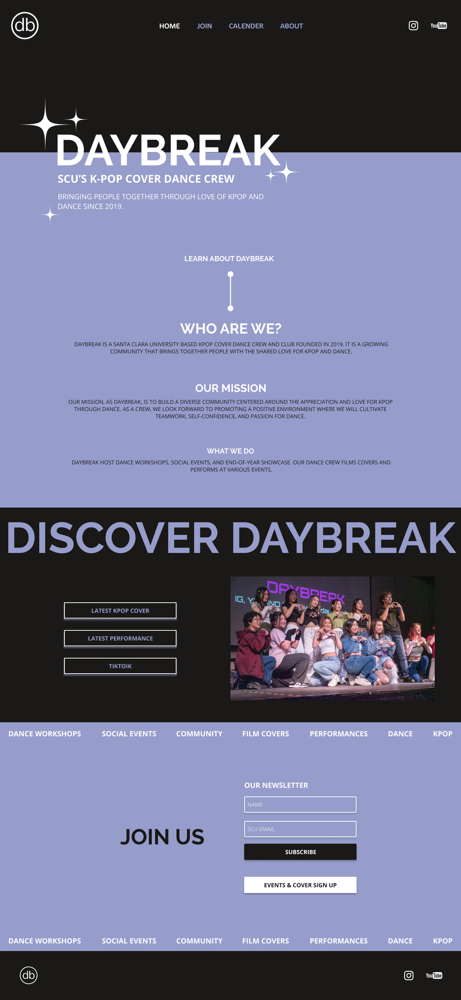

Web Design
Daybreak

Skills
UI Design
Front-end Development
Toolkit
Figma
InDesign
HTML, CSS, JS
Duration
2 Months (2023)
Overview
Daybreak is a K-pop Dance Crew at SCU that brings people together through a shared passion for K-pop and dance. As an active member, I explored and developed a potential website for the club. This project envisions a site designed to enhance communication among members and promote the club to a broader audience.
Problem Statement
As Daybreak K-pop Dance Crew experiences growth in both membership and local recognition, there is a pressing need to enhance our promotional efforts and improve communication among our expanding member base.Through developing a dedicated website, we can address these needs by providing a central platform for effective outreach, showcasing the club’s story and enhancing engagement with both current and prospective members.
Goal
To create a dedicated website for Daybreak that effectively represents our club and serves as a tool for outreach and promotion to potential members and external dance groups.
Target Audiences
- Potential and current club members
- Outside dance groups
- Individuals aged 17-25
Typical Activities
- Learning about Daybreak
- Subscribing to newsletters
- Checking upcoming events
- Registering for dance covers
Site Structure
Before starting the design process, I identified the club's needs for the website and developed a site structure that best captures the intended use cases.

Mood Board
Creating this mood board helped me visualize the elements for the site, including color combinations and overall ambiance. For example, elements like stars were incorporated into the final design.

Colors
Purple, a key color from Daybreak's original logo, is used as the primary accent on the website, complemented by black and white. This color scheme evokes the ambiance of a performance stage.

Homepage
One of the main goals of the website is to help potential members and outside groups discover and learn about Daybreak. The homepage provides information about who we are, our mission, includes quick links to our dance content, and offers the option to sign up for our newsletter.
Calendar

The embedded calendar feature allows members to quickly identify workshops, events, and practice days. Non-members can also use it to understand the various activities our club offers.
Join Page
This page serves as the primary hub for those interested in getting involved with Daybreak, providing information on the newsletter, upcoming events, and dance covers.

About Page
Our board works extremely hard to run the club, and this dedicated page allows everyone to get to know them.

Design Poster